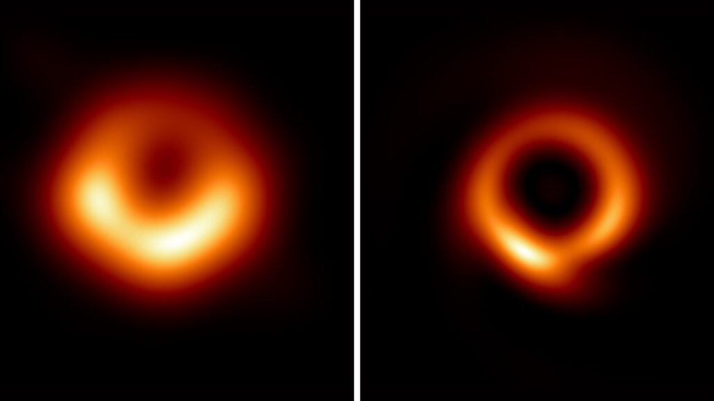

Vitor Beraldo
Tudo sobre
BURACOS NEGROS

A ideia de um corpo tão massivo que nem a luz poderia escapar foi brevemente proposta pelo pioneiro astronômico e clérigo inglês John Michell em uma carta publicada em novembro de 1784. Os cálculos simplistas de Michell supunham que esse corpo pudesse ter a mesma densidade que o Sol e concluíram que esse corpo se formaria quando o diâmetro de uma estrela excedesse o do Sol por um fator de 500 e a velocidade de escape da superfície excedesse a velocidade usual da luz. Michell observou corretamente que esses corpos supermassivos, mas não irradiantes, podem ser detectados por seus efeitos gravitacionais em corpos visíveis próximos. Os estudiosos da época ficaram inicialmente empolgados com a proposta de que estrelas gigantes, mas invisíveis, pudessem estar escondidas à vista de todos, mas o entusiasmo diminuiu quando a natureza ondulatória da luz se tornou aparente no início do século XIX. Se a luz fosse uma onda e não um "corpúsculo", não está claro o que, se houver, influenciaria a gravidade na fuga das ondas de luz. A relatividade moderna desacredita a noção de Michell de um raio de luz disparando diretamente da superfície de uma estrela supermassiva, sendo desacelerado pela gravidade da estrela, parando e caindo livremente de volta à superfície da estrela.
Os buracos negros estáticos mais simples têm massa, mas não têm nem carga elétrica nem momento angular. Esses buracos negros são frequentemente chamados de buracos negros de Schwarzschild, em homenagem a Karl Schwarzschild, que descobriu essa solução em 1916.[23] Segundo o teorema de Birkhoff, é a única solução a vácuo esfericamente simétrica. Isso significa que não há diferença observável à distância entre o campo gravitacional de um buraco negro e o de qualquer outro objeto esférico da mesma massa. A noção popular de um buraco negro "sugando tudo" em seus arredores é, portanto, correta apenas perto do horizonte de um buraco negro; distante, o campo gravitacional externo é idêntico ao de qualquer outro corpo da mesma massa.
Também existem soluções que descrevem buracos negros mais gerais. Buracos negros carregados sem rotação são descritos pela métrica de Reissner-Nordström, enquanto a métrica de Kerr descreve um buraco negro rotativo sem carga. A solução estacionária mais geral de buraco negro conhecida é a métrica de Kerr-Newman, que descreve um buraco negro com carga e momento angular
Enquanto a massa de um buraco negro pode assumir qualquer valor positivo, a carga e o momento angular são restringidos pela massa. Nas unidades de Planck, a carga elétrica total Q e o momento angular total J devem satisfazer
 para um buraco negro de massa M. Buracos negros com a massa mínima possível que satisfazem essa desigualdade são chamados extremais. Existem soluções das equações de Einstein que violam essa desigualdade, mas elas não possuem um horizonte de eventos. Essas soluções têm as chamadas singularidades nuas, que podem ser observadas do lado de fora e, portanto, são consideradas não físicas. A hipótese da censura cósmica exclui a formação de tais singularidades, quando elas são criadas através do colapso gravitacional da matéria realista.[7] Isso é apoiado por simulações numéricas.[67]
Devido à força relativamente grande do eletromagnetismo, espera-se que os buracos negros formados pelo colapso das estrelas retenham a carga quase neutra da estrela. Espera-se que a rotação seja uma característica universal de objetos astrofísicos compactos. A fonte de raios X binária candidata a buraco negro GRS 1915 + 105 parece ter um momento angular próximo ao valor máximo permitido. Esse limite sem carga é
para um buraco negro de massa M. Buracos negros com a massa mínima possível que satisfazem essa desigualdade são chamados extremais. Existem soluções das equações de Einstein que violam essa desigualdade, mas elas não possuem um horizonte de eventos. Essas soluções têm as chamadas singularidades nuas, que podem ser observadas do lado de fora e, portanto, são consideradas não físicas. A hipótese da censura cósmica exclui a formação de tais singularidades, quando elas são criadas através do colapso gravitacional da matéria realista.[7] Isso é apoiado por simulações numéricas.[67]
Devido à força relativamente grande do eletromagnetismo, espera-se que os buracos negros formados pelo colapso das estrelas retenham a carga quase neutra da estrela. Espera-se que a rotação seja uma característica universal de objetos astrofísicos compactos. A fonte de raios X binária candidata a buraco negro GRS 1915 + 105 parece ter um momento angular próximo ao valor máximo permitido. Esse limite sem carga é
 permitindo a definição de um parâmetro de rotação adimensional, tal que
permitindo a definição de um parâmetro de rotação adimensional, tal que
 Classificações de buracos negros
Classe Massa aprox. Raio aprox.
Buraco negro supermassivo 105–1010 MSol 0,001–400 AU
Buraco negro de massa intermediária 103 MSol 103 km ≈ RTerra
Buraco negro estelar 10 MSol 30 km
Microburaco negro até MLua até 0,1 milímetro
Buracos negros são comumente classificados de acordo com sua massa, independente do momento angular, J. O tamanho de um buraco negro, conforme determinado pelo raio do horizonte de eventos, ou raio de Schwarzschild, é proporcional à massa M, através de
Classificações de buracos negros
Classe Massa aprox. Raio aprox.
Buraco negro supermassivo 105–1010 MSol 0,001–400 AU
Buraco negro de massa intermediária 103 MSol 103 km ≈ RTerra
Buraco negro estelar 10 MSol 30 km
Microburaco negro até MLua até 0,1 milímetro
Buracos negros são comumente classificados de acordo com sua massa, independente do momento angular, J. O tamanho de um buraco negro, conforme determinado pelo raio do horizonte de eventos, ou raio de Schwarzschild, é proporcional à massa M, através de
 onde rs é o raio de Schwarzschild e MSol é a massa do Sol. Para um buraco negro com rotação diferente de zero e/ou carga elétrica, o raio é menor, até que um buraco negro extremo possa ter um horizonte de eventos próximo a
onde rs é o raio de Schwarzschild e MSol é a massa do Sol. Para um buraco negro com rotação diferente de zero e/ou carga elétrica, o raio é menor, até que um buraco negro extremo possa ter um horizonte de eventos próximo a

Por natureza, os próprios buracos negros não emitem nenhuma radiação eletromagnética além da hipotética radiação Hawking, de modo que os astrofísicos que procuram buracos negros geralmente devem confiar em observações indiretas. Por exemplo, a existência de um buraco negro às vezes pode ser inferida observando sua influência gravitacional sobre o ambiente ao redor dele. A impressão deste artista descreve os caminhos dos fótons nas proximidades de um buraco negro. A curvatura gravitacional e a captura de luz pelo horizonte de eventos é a causa da sombra capturada pelo EHT O Event Horizon Telescope (EHT), administrado pelo Haystack Observatory do MIT, é um programa ativo que observa diretamente o ambiente imediato do horizonte de eventos dos buracos negros, como o buraco negro no centro da Via Láctea. Em abril de 2017, o EHT iniciou a observação do buraco negro no centro de Messier 87. "No total, oito observatórios de rádio em seis montanhas e quatro continentes observaram a galáxia em Virgo por 10 dias em abril de 2017" para fornecer os dados que renderam a imagem dois anos depois, em abril de 2019. Após dois anos de processamento de dados, a EHT divulgou a primeira imagem direta de um buraco negro, especificamente o buraco negro supermassivo que fica no centro da galáxia acima mencionada.[139][140] O que é visível não é o buraco negro, que se mostra preto por causa da perda de toda a luz nessa região escura, mas sim os gases na borda do horizonte de eventos, exibidos em laranja ou vermelho, que definem a forma do buraco negro. Pensa-se que o brilho deste material na metade 'inferior' da imagem EHT processada é causado pelo efeito Doppler, pelo qual o material que se aproxima do espectador a velocidades relativísticas é percebido como mais brilhante do que o material que se afasta. No caso de um buraco negro, esse fenômeno implica que o material visível está girando a velocidades relativísticas (>1 000 km/s), as únicas velocidades nas quais é possível equilibrar centrifugamente a imensa atração gravitacional da singularidade e, assim, permanecer em órbita acima do horizonte de eventos. Essa configuração de material brilhante implica que o EHT observou o M87 * de uma perspectiva que captura o disco de acreção do buraco negro quase de ponta a ponta, enquanto todo o sistema girava no sentido horário. Antes disso, em 2015, o EHT detectou campos magnéticos fora do horizonte de eventos de Sagitário A* e até discerniu algumas de suas propriedades. As linhas de campo que passam pelo disco de acreção foram consideradas uma mistura complexa de ordenadas e emaranhadas. A existência de campos magnéticos havia sido prevista por estudos teóricos de buracos negros. Detecção de ondas gravitacionais da fusão de buracos negros Aparência prevista de buraco negro não rotativo com anel toroidal de matéria ionizada, como foi proposto como modelo para Sagitário A*. A assimetria é devida ao efeito Doppler resultante da enorme velocidade orbital necessária para o equilíbrio centrífugo da atração gravitacional muito forte do buraco. Em 14 de setembro de 2015, o observatório de ondas gravitacionais LIGO fez a primeira observação direta bem-sucedida de ondas gravitacionais. O sinal foi consistente com as previsões teóricas para as ondas gravitacionais produzidas pela fusão de dois buracos negros: um com cerca de 36 massas solares e o outro com 29 massas solares. Mais importante, o sinal observado pelo LIGO também incluiu o início do toque pós-fusão, o sinal produzido quando um objeto compacto recém-formado se estabiliza em um estado estacionário. Indiscutivelmente, o toque é a maneira mais direta de observar um buraco negro. A partir do sinal LIGO, é possível extrair a frequência e o tempo de amortecimento do modo dominante do toque. A partir disso, é possível inferir a massa e o momento angular do objeto final, que correspondem a previsões independentes a partir de simulações numéricas da fusão. A frequência e o tempo de decaimento do modo dominante são determinados pela geometria da esfera de fótons. Portanto, a observação desse modo confirma a presença de uma esfera de fótons, no entanto, não pode excluir possíveis alternativas exóticas aos buracos negros que são compactos o suficiente para ter uma esfera de fótons. A observação também fornece a primeira evidência observacional da existência de buracos negros binários de massa estelar. Além disso, é a primeira evidência observacional de buracos negros de massa estelar pesando 25 massas solares ou mais. Em 15 de junho de 2016, foi anunciada uma segunda detecção de um evento de onda gravitacional em colisão de buracos negros e outros eventos de ondas gravitacionais foram observados desde então.